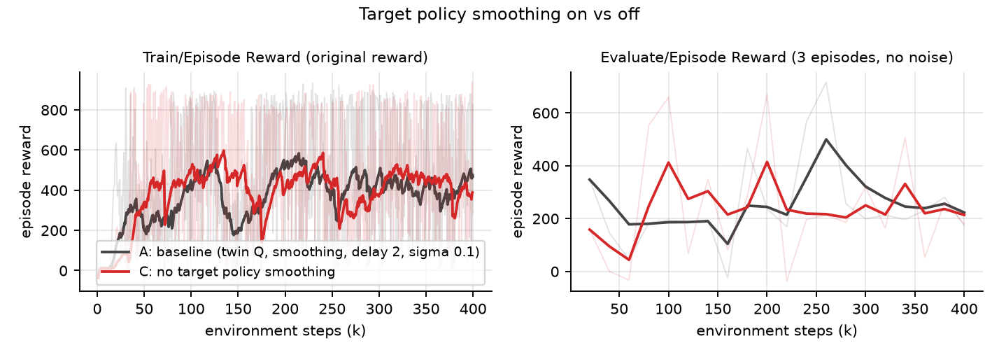
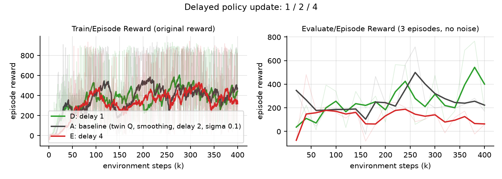

網路架構與前處理沿用 sample code（4 張堆疊灰階畫面，actor 輸出 steer / gas / brake）。TD3 的三個技巧以參數開關控制：
--single_q 關閉）。--no_target_smoothing 關閉）。--policy_delay d）。超參數依講義：buffer 5000、batch 32、learning rate 4.5e-5、γ = 0.99、τ = 0.005、policy delay 2、探索 σ = 0.1。訓練每 20k 步評估 3 場（不加 noise）。訓練時保留 sample code 的離開賽道規則（−100 並結束），測試時不使用。
$ python test.py --checkpoint model_320000_825.pth --seeds 0 1 2 3 4 5 6 7 8 9 Episode: 1 Length: 999 Total reward: 834.17 Episode: 2 Length: 999 Total reward: 845.45 Episode: 3 Length: 583 Total reward: 149.16 Episode: 4 Length: 999 Total reward: 859.41 Episode: 5 Length: 999 Total reward: 841.82 Episode: 6 Length: 999 Total reward: 842.25 Episode: 7 Length: 999 Total reward: 811.97 Episode: 8 Length: 999 Total reward: 664.89 Episode: 9 Length: 999 Total reward: 848.21 Episode: 10 Length: 999 Total reward: 864.91 average score: 756.2245092188193
上為 test.py 在 seed 0–9 的輸出。擴大到 60 條賽道（seed 0–59）測試：平均 804.8，53 條 ≥ 800（圖 2）。
訓練中的評估只有 3 場、起伏很大，所以 checkpoint 不是直接取 best.pth，而是先在 seed 0–19 初選，再用沒參與挑選的 seed 20–59 確認。

以下都用 seed 0、各訓練 400k 步，除被比較的元件外設定與 baseline A 相同。每組只有一個 seed，結論應視為趨勢。
| Run | 設定 | 最高評估（步數） | 200k–400k 平均評估 |
|---|---|---|---|
| A | baseline（twin Q、smoothing、delay 2、σ = 0.1） | 716（260k） | 300 |
| B | single Q | 362（140k） | 150 |
| C | 無 target policy smoothing | 672（200k） | 204 |
| D / E | policy delay 1 / 4 | 765（380k）/ 481（40k） | 365 / 111 |
| F / G | 探索 σ = 0.3 / 0.03 | 353（40k）/ 400（60k） | 37 / 176 |
| I | 原始 reward + 草地懲罰 | 762（200k） | 301 |

結果：single Q 的訓練與評估大部分時間都低於 baseline，最高評估只有 362（A 為 716），是退步最明顯的一項。
解釋：actor 最大化 Q，會主動挑 critic 估得過高的動作；只有一個 Q 時，這個高估會經由 bootstrap 累積，actor 被引導到「Q 高但實際差」的動作（在彎道過快衝出）。取兩個 critic 的較小值當 target，給出偏保守的估計，抵銷了這個偏差，學習因此穩定。

結果：關掉後訓練 reward 差不多，但 200k 步後評估停在 200–250（平均 204 對 300）。退步幅度比拿掉 twin Q 小，單一 seed 下仍在雜訊範圍內。
解釋：沒有 smoothing 時，target 只看 μ′(s′) 一個點，deterministic policy 會利用 critic 的局部尖峰。在 target action 加上小 noise，等於要求相近動作有相近的 Q 值，降低 target 的變異。CarRacing 的動作只有三維又被 clip，尖峰的空間有限，所以影響比 twin Q 小，主要表現在不加 noise 的評估穩定度上。

結果：buffer 5000 時 delay 1 > 2 > 4；delay 4 在 40k 步達到 481 後一路下滑。但 buffer 加大到 50000 後結果反過來：delay 2 的後段平均 660，delay 1 只有 263。
解釋：delay 讓 critic 先更新到較準，actor 再沿可靠的梯度更新，減少發散，代價是 actor 更新次數變少。learning rate 很小時，delay 4 的 actor 學得太慢。buffer 小時資料分布變化快、critic 本來就追不上，頻繁更新 actor 反而較好；buffer 大時 critic 較準，delay 2 降低變異的好處才顯現。最佳 delay 與其他超參數有交互作用。

結果：σ = 0.03 收斂最慢，評估一直在 200 以下；σ = 0.3 的訓練 reward 最高（後段 632），但不加 noise 的評估幾乎失敗（37）；σ = 0.1 的訓練與評估最一致。
解釋：noise 太小時探索不足，buffer 裡的動作集中在目前策略附近，critic 對其他動作估不準，容易卡在差的策略。noise 太大時，critic 學到的是「策略 + 大 noise」的價值，而 gas / brake 會被 clip 在 [0, 1]，加 noise 後的實際動作與 μ 不同；拿掉 noise 評估時動作分布改變，因此訓練高、評估差（此為推測）。

設計（I，--reward_shaping grass）：保留原始 reward 與 −100 的離開賽道懲罰，每步再減去 0.5 × 車輛附近草地像素數 / 480（車周圍 24 × 20 區域），偏離越多懲罰越大，最多 −0.5。只在訓練時使用。
| Run | 訓練用 reward | 0–400k 平均評估 | 最佳 checkpoint 在 seed 0–19 的平均 | < 300 的條數 |
|---|---|---|---|---|
| A | 原始 reward | 249 | 697.2 | 3 |
| H | 草地懲罰 + 早停 + clip 到 −1 | 152 | 418.1 | 6 |
| I | 原始 reward + 草地懲罰 | 322 | 744.0 | 1 |
為什麼較好：原始的 −100 只在車完全衝出時才出現，稀疏又晚；草地懲罰隨偏離程度漸增，在衝出之前就讓 critic 學到「越靠近邊緣價值越低」，actor 沿這個梯度把車拉回中間。因此 I 前 200k 步學得較快，嚴重失誤也較少。懲罰最多 −0.5，遠小於新賽道格的獎勵（約 +3），不會讓 agent 過度保守。
第一版設計（H）的失敗原因：H 另外加了早停（100 步無正 reward 就 truncate）與 clip 到 −1。clip 把 −100 削弱成 −1，衝出賽道幾乎沒有代價；早停則會在減速過彎時誤觸。拿掉這兩項後（I）才超越原始 reward。
在 baseline 上做了兩項調整：buffer 從 5000（約 10–15 個 episode）加大到 50000；sample code 的煞車輸出只有 [0, 0.03]，遠小於 σ = 0.1，車常因隨機煞車失速，所以把煞車維度的 noise 乘 0.1。這組設定（R1）的後段平均評估從 300 提高到 660，最終模型取自其 320k 步。不過同設定換成 seed 1、2 時最高評估只有 687 和 598，TD3 在此任務上對隨機種子相當敏感。